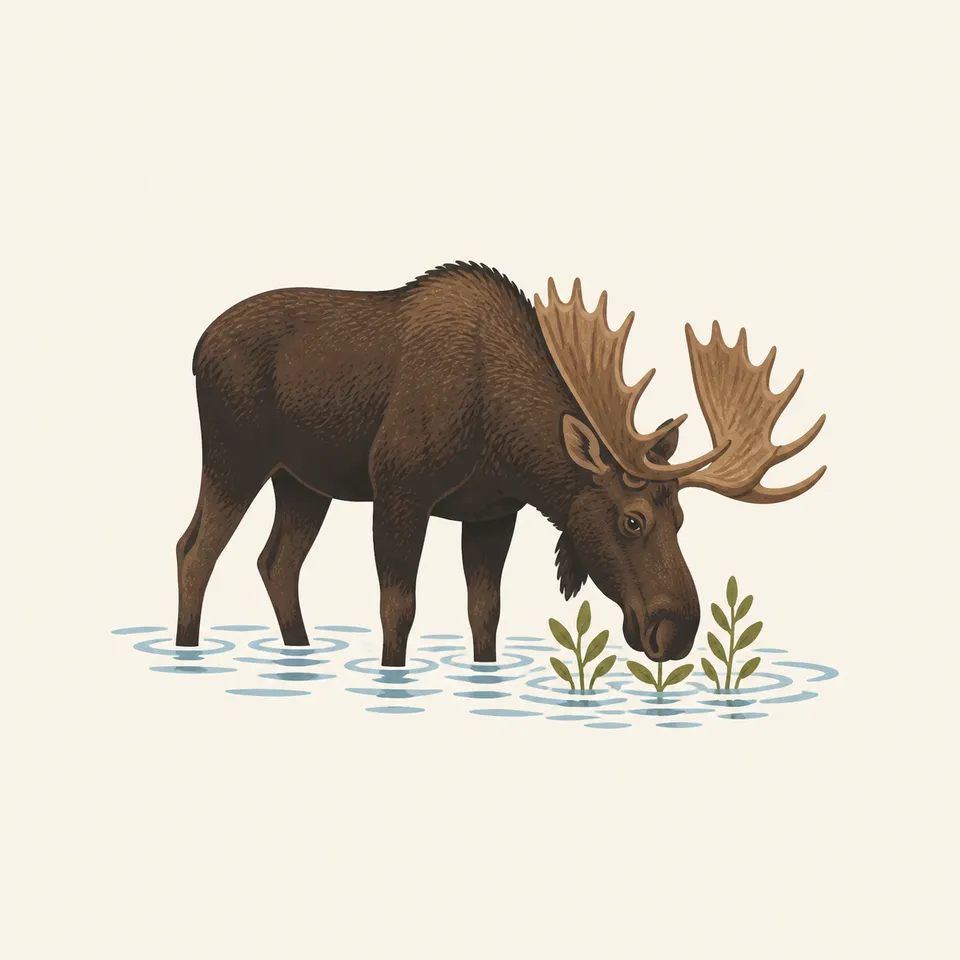
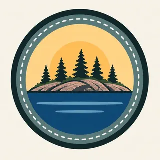

01
The archipelago
More than 400 smaller islands plus Isle Royale itself. The homepage calls it Minong. Getting there means crossing Lake Superior. Boat schedules are on NPS.
TrailMark Archive Edition
Michigan | Lake Superior
Authorized March 3, 1931. Established April 3, 1940. Most of the acres are under the lake.
Archive No. TM-ISRO-044
National Park since 1940
Collection Lake Superior
Park Overview
President Herbert Hoover approved Isle Royale on March 3, 1931; President Franklin D. Roosevelt established the park on April 3, 1940. Enough private land had been acquired by then to proceed.
The foundation document says the park is 571,790 acres in northwestern Lake Superior, 14 miles from the Canadian shore, and that 75 percent of those acres are submerged. The main island and more than 400 smaller islands make the archipelago. There are no roads.
On October 20, 1976, 132,018 acres, 99 percent of the 133,788 land acres, were designated wilderness or potential wilderness. A cultural history says the dedication, delayed by the war, was August 27, 1946. The Grand Portage Band calls the island Minong, the good place. The homepage says it is ancestral Anishinaabe land.
Emotional Thesis
Rock, spruce, and a chain of islands in still water, with a small light on the far one. The foundation document says the rocks record more than a billion years of volcanism, sediment, uplift, and erosion. The water is the larger acreage.
Wolf and moose have shared the island only since the late 1940s, the same document says, and have become a classic predator and prey study. The moose in the extra drawing is one animal from that study, not the population.
Landscape Highlights
01
More than 400 smaller islands plus Isle Royale itself. The homepage calls it Minong. Getting there means crossing Lake Superior. Boat schedules are on NPS.
02
Ninety-nine percent of the land acres were designated in 1976. The submerged majority was not that designation. Know which map you are on, rock or water.
03
The homepage says Rock of Ages is one of four lighthouses. The painting's distant tower is that kind of mark. It is not labeled as a specific light.
Wildlife
The foundation document says moose and wolves have been on the island together only since the late 1940s, and that for many visitors the wildlife is the wilderness.

01
The extra drawing is one moose in shallow water. It is not a population. The study's numbers change. They live on the park's science pages.
02
Lake trout crashed in the late 1940s when lamprey arrived on top of commercial fishing, a cultural plan says. The fishery is a human story as well as a fish story.
03
The homepage says moose are one of the few mammal species that have reached the island. That scarcity is the point of an island.
Geology
The foundation document gives the geologic sequence: volcanism, sedimentation, uplift, and erosion, across more than a billion years.
01
Seventy-five percent of 571,790 acres are underwater. The islands in the header are the quarter you can stand on.
02
Ancient copper is why people mined here. The history index sends you to that chapter.
03
Distances to the mainland differ by shore. The foundation document says 14 miles from Canada, about 20 from Minnesota, and about 45 from Michigan's Upper Peninsula. Those are different crossings, not one disputed number.
The homepage says the visit is a commitment across Lake Superior. Ferries and the season they run are on NPS. This essay does not print a schedule.
Backcountry is the management focus. There is no road to shorten a walk. A 1936 fire took a fifth of the forest. The woods you see grew back after that, and after older cuts.
The island does not become a drive-up park in January. Access is the question. Read the park before you assume a summer map.
The homepage points to dark skies and the aurora. That is a reason to look up after the crossing, not a forecast.
Photography
A spruce island with no lake is a woods. Isle Royale is an archipelago.
01
A near rock and a far island, as in the header, show how many shores there are.
02
One animal in a drawing is not the study. Do not approach a moose to match it.
03
If a picture has a highway, it is not this park. The approach is by boat.
Field Notes
They waited until 1940 to say the island was a park, because the cabins had to be bought first. The lake was already the larger acreage.
TrailMark Field Notes

Badge Story
The mark is rock, spruce, and Superior. A sand beach would be Indiana Dunes.
Several islands, a near cliff, maybe a small light.
A moose can be the animal. It is not a count, and the wolves are the other half of the study.
Do not add a road or a ferry schedule to the badge.
Archive No.044
LocationLake Superior
ReleaseIsland Mark
Stewardship / Safety
No roads, a wilderness designation on almost all the land, and weather that cancels boats. Plan on the NPS page.
Food storage rules change. The homepage has pointed visitors at a 2026 update. Read the current one.
Moose and wolves are wild. The study does not make them approachable.
Life-lease history means some cabins were homes. Treat structures as cultural resources.
Ancient copper sites and shipwrecks are part of the record. Leave them.
Current conditions, fees, and alerts are on the National Park Service site.
Continue the Archive
Indiana Dunes is the Lake Michigan shore in this batch. Isle Royale is Superior, and it is an island you cannot drive to.